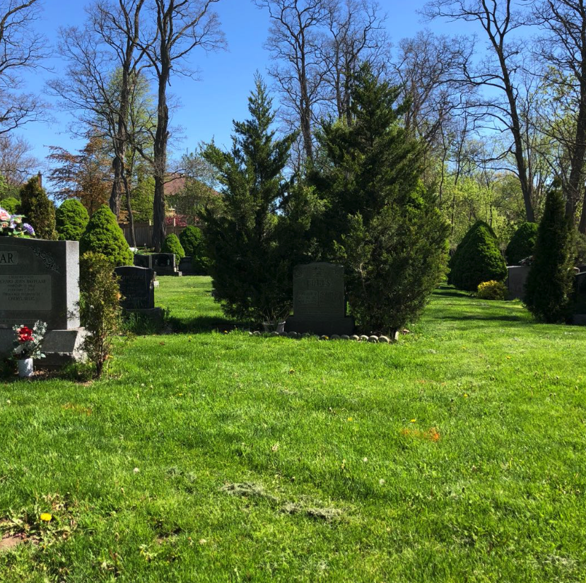
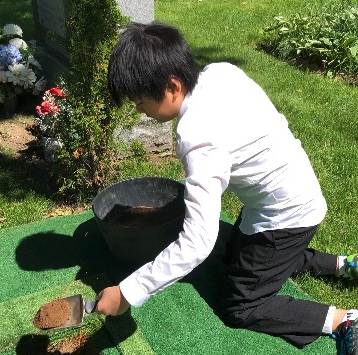
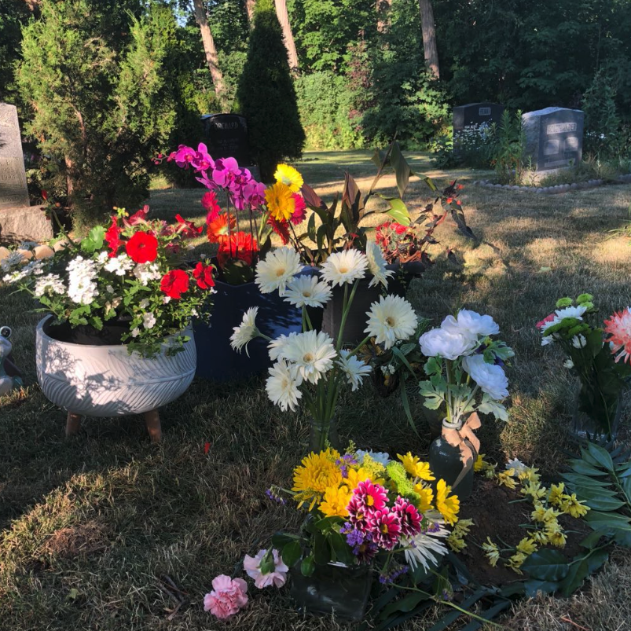

返回首页
睡在这片草地之下，2020年6月, Streetsville Public Cemetery, Mississauga。

No. 1
小宝葬母, 2020年6月, Streetsville Public Cemetery, Mississauga。

No. 2
鲜花常伴，2020年7月, Streetsville Public Cemetery, Mississauga。

No. 3
返回首页